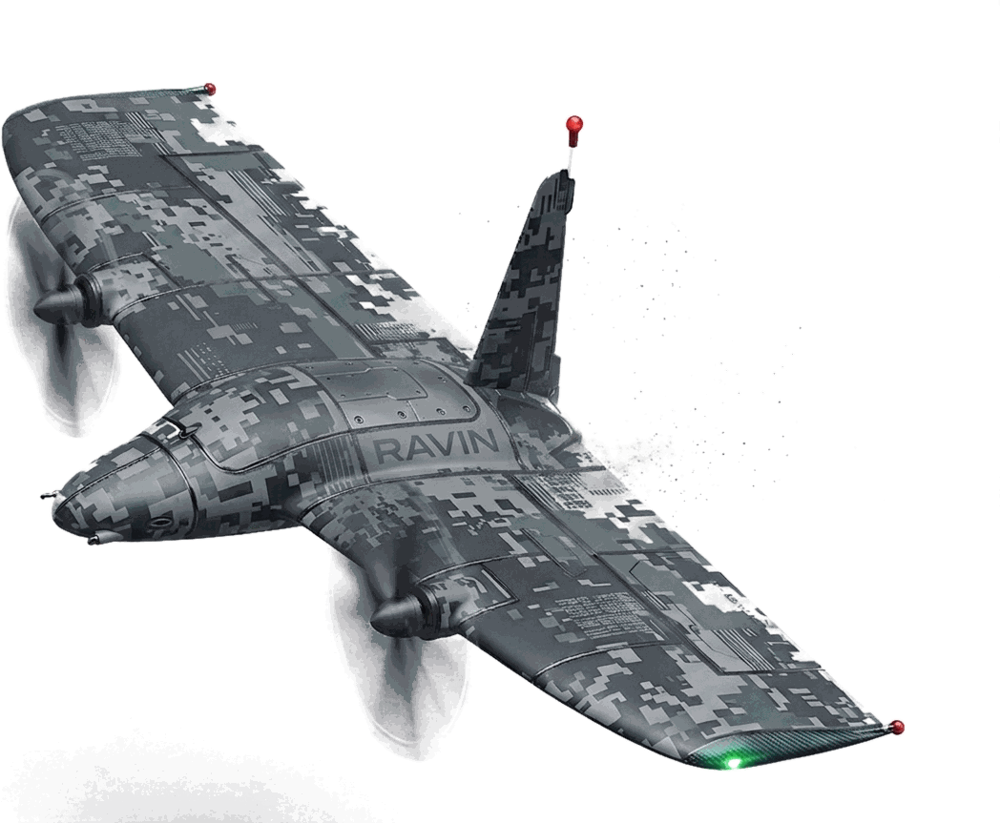

Unibody composite shell
Wing, body and tail formed as one structure — fewer joints, less to fail and less to inspect between sorties.
01 — The aircraft
Small UAS usually forces a choice: multirotors launch anywhere and run out of endurance; fixed wings do the opposite and need a runway to prove it. Ravin sits on its tail, lifts off vertically, then pitches over and flies as a wing — the trade-off, gone.

Airframe specification
Wing, body and tail formed as one structure — fewer joints, less to fail and less to inspect between sorties.
The same units lift the aircraft vertically and drive it forward once it is wing-borne.
A defined volume in the centre body with its own access panel — swap the payload without touching flight structure.
Lit for orientation in low light, and doubling as the aircraft's landing contact point.
In flight
Vertical launch, transition and wing-borne cruise.
Concept of operations
No runway, catapult or launch rail. The aircraft stands on its tail and climbs vertically from the spot it was set down.
It transitions to horizontal flight for the mission, trading rotor lift for wing efficiency and the endurance that comes with it.
It returns to the vertical and settles onto its wingtip skids. No net, no belly landing, no recovery crew.